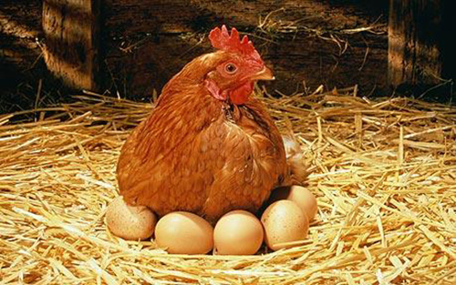

ปริศนา "ไก่กับไข่" เป็นเรื่องที่มีการถกเถียงกันมานาน ในสมัยกรีกโบราณ นักปรัชญาเช่น อริสโตเติล ได้ตั้งคำถามเกี่ยวกับกระบวนการเกิดและการสร้างชีวิต ซึ่งในมุมมองของเขา ไก่และไข่ต่างก็จำเป็นต้องมีการเกิดขึ้นและมีความสัมพันธ์กันและกัน
 ปริศนา ไก่กับไข่ เป็นเรื่องที่มีการถกเถียงกันมานานในสมัยกรีกโบราณ นักปรัชญาเช่น อริสโตเติลได้ตั้งคำถามเกี่ยวกับ กระบวนการเกิดและการสร้างชีวิตซึ่งในมุมมองของเขา ไก่และไข่ต่างก็จำเป็นต้องมีการเกิดขึ้นและมีความสัมพันธ์กันและกัน ความคิดนี้สะท้อนให้เห็นถึงความเข้าใจของมนุษย์ในยุคโบราณเกี่ยวกับธรรมชาติและวงจรชีวิตของสิ่งมีชีวิตปัจจุบัน นักวิทยาศาสตร์ได้ช่วยให้เราเข้าใจปริศนานี้ได้มากขึ้น
ทฤษฎีวิวัฒนาการของชาร์ลส์ ดาร์วิน ชี้ให้เห็นว่าไก่และไข่พัฒนามาจากบรรพบุรุษที่ไม่ใช่ไก่หรือไข่ที่เรารู้จักในปัจจุบัน สายพันธุ์ต่าง ๆ มีการเปลี่ยนแปลงทีละน้อยจากการกลายพันธุ์และการคัดเลือกตามธรรมชาติ ไก่ที่เรารู้จักในปัจจุบันเกิดจากการเปลี่ยนแปลงทางพันธุกรรมของบรรพบุรุษ ซึ่งทำให้เกิดไข่ที่มีลักษณะเฉพาะและ ฟักออกมาเป็นไก่ นอกจากนี้นักวิทยาศาสตร์ยังช่วยให้เราเข้าใจถึงกระบวนการทางชีวเคมีของการสร้างไข่ ไข่ไก่มีโปรตีนที่เรียกว่าโอวาลบูมิน (Ovalbumin) ซึ่งพบได้เฉพาะในไก่เท่านั้น นี่บ่งชี้ว่าไก่ที่สามารถสร้างไข่ได้ต้องเกิดขึ้นก่อนการเกิดไข่ที่มีลักษณะเฉพาะนี้
การศึกษาทางพันธุกรรมยังเผยให้เห็นว่า การเปลี่ยนแปลงเล็กน้อยในดีเอ็นเอของบรรพบุรุษไก่ทำให้เกิดการพัฒนาสายพันธุ์ใหม่ ซึ่งทำให้ไข่ที่ฟักออกมามีลักษณะเฉพาะที่เป็นไก่สมัยใหม่ การกลายพันธุ์นี้เกิดขึ้นในระดับเซลล์ไข่ นั่นหมายความว่า ไข่ไก่สมัยใหม่ต้องมาก่อนเพื่อที่จะฟักออกมาเป็นไก่ที่เรารู้จักในปัจจุบัน
นอกจากการวิวัฒนาการทางชีววิทยาแล้ว ยังมีการศึกษาทางวิทยาศาสตร์อื่น ๆ ที่สนับสนุนการพัฒนาของไก่และไข่ เช่น การวิจัยเกี่ยวกับการจัดเรียงตัวของโปรตีนในเปลือกไข่และการพัฒนาของตัวอ่อนในไข่ การศึกษาเหล่านี้ช่วยเสริมสร้างความเข้าใจเกี่ยวกับกระบวนการที่ซับซ้อนและมีความสัมพันธ์กันของไก่และไข่
ปริศนา "ไก่กับไข่" เป็นคำถามที่ยังคงได้รับความสนใจและมีการถกเถียงกันอยู่ แม้ว่าในทางวิทยาศาสตร์จะมีคำตอบที่ว่า ไก่เกิดขึ้นก่อนจากการวิวัฒนาการของบรรพบุรุษที่ไม่ใช่ไก่ และไข่ไก่เกิดขึ้นจากการกลายพันธุ์ของสายพันธุ์เหล่านั้น แต่คำถามนี้ยังคงเป็นสัญลักษณ์ของการคิดถึงความสัมพันธ์และกระบวนการเกิดขึ้นของสิ่งมีชีวิต รวมถึงการพิจารณาถึงธรรมชาติของการเปลี่ยนแปลงและการพัฒนาในโลกใบนี้